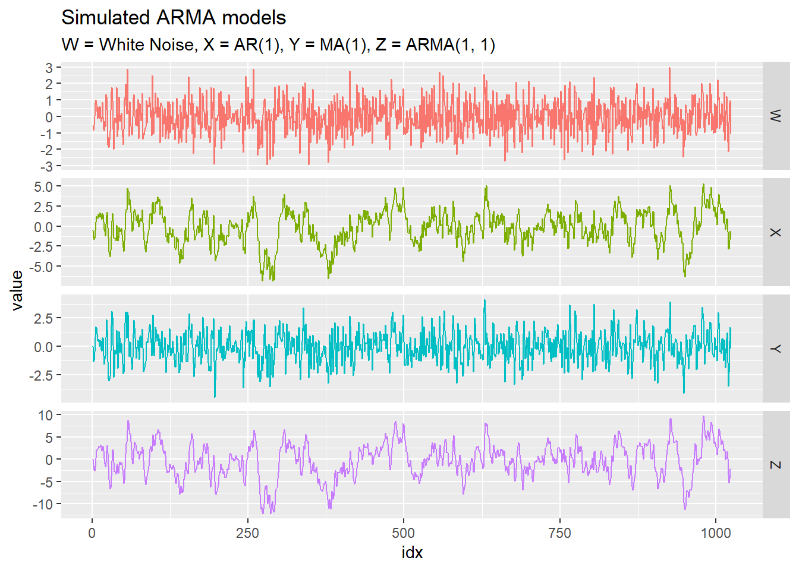
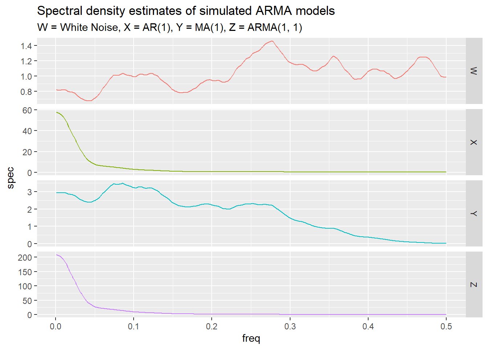
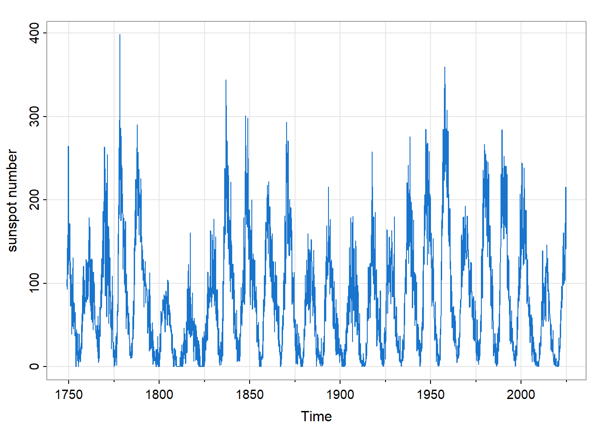
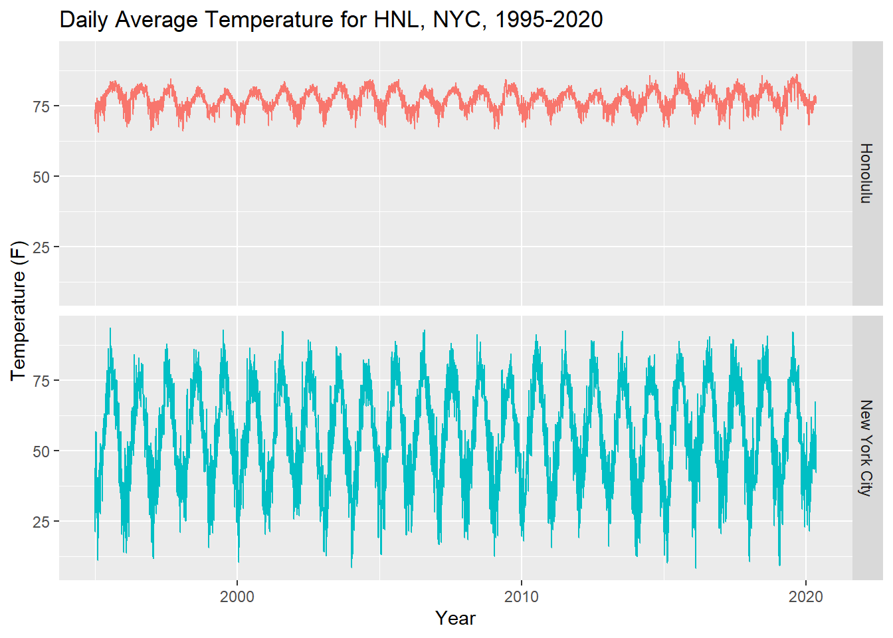

Time Series Spectrum Analysis
An Introduction
Abstract
Introduce the Fourier spectrum of a time series. Introduction
The analysis of time series has proved to have both pragmatic and scientific value. For time series that track business activity or broader economic activity, the ability to forecast future values with some degree of reliability has evident practical value. The potential of such forecasting has influenced the development of time domain models, notably auto-regressive moving average (ARMA) models.
On the other hand, natural processes often exhibit periodic behavior, and have given rise to the Fourier decomposition of such time series, that is, the representation of the process as a sum of sine waves over a range of frequencies.
Sunspots
An early example of such periodic behavior is shown in Figure 3, the time series of monthly sunspot numbers. Sunspots have been observed for millennia, but systematic scientific observations began in the 1600’s.1
Sunspots are a key indicator of the solar magnetic activity cycle in which the sun’s magnetic polarity reverses every 11 years or so. At the peak of a cycle the sun emits bursts of charged particles (solar flares) across the solar system that affect the Earth. Consequently, understanding the solar cycle has both scientific and practical value.
Gaps between peak sunspot numbers vary, so a simple sinusoidal wave (or other function) having a fixed period does not fit the data well. On the other hand, the variability of the data is clarified by Fourier decomposition and subsequent grouping of fitted sine waves within successive bands of frequencies. This approach is discussed in Section 2.
Average Daily Temperatures
Figure 4 shows average daily temperatures for Honolulu and New York City over a 25-year period (1995-2020). The overall average temperature in NYC is about 56 (F), well below that of Honolulu (77). Also note that the standard deviation of NYC temperatures, roughly 17.1 (F), is well above that of Honolulu (3.4). So Honolulu temperatures are higher than those of NYC and fluctuate less (as visitors to those two cities may testify). Less clear, however, is the degree to which seasonal variation accounts for the overall variation in each city. This is a question that can be addressed by Fourier decomposition.
Mathematical Framework
Data derived from a random process
Statistical applications are often based on one or more data frames in which each row represents an observation and each column represents a variable of interest. For example, here are the first few values of the temperature data shown in Figure 4.
# A tibble: 9,265 × 3
date HNL NYC
<date> <dbl> <dbl>
1 1995-01-01 71.3 44
2 1995-01-02 72.5 41.8
3 1995-01-03 73.2 28.1
# ℹ 9,262 more rowsThe distinction of time series analysis is that observations are indexed by time2, and are not assumed to be statistically independent. Instead, time series data are typically modeled as a realization of a random process of the following form.3
\[ \begin{align} X_\bullet (t) = (X_1 (t), \ldots, X_d (t)) \in \mathbb{R}^d \end{align} \tag{1}\]
If the number of data columns is two or greater \((d \ge 2)\), the process is said to be multivariate. Otherwise, if \(d = 1\) the process is said to be univariate, and the notation is simplified to \(X (t)\).4
In our example there are two data columns (HNL, NYC), so that \(d = 2\), the unit of time is one day, and the sampling frequency is once per day.
The random process is idealized to span all time \((t \in \mathbb{Z})\), but the data of course span some finite period, \(\tau_T\), of length \(T\).
\[ \begin{align} \tau_T &= \{ t_0, \; t_0 + 1, \ldots, t_f \} \\ t_0 &= \text{ initial data index} = \min \tau_T \\ t_f &= \text{ final data index} = \max \tau_T \\ T &= \text{ number of observatons } = t_f - t_0 + 1 \\ \nu_T &= \tau_T - t_0 = \{ 0, 1, \ldots, T-1 \} \end{align} \tag{2}\]
The expected value of the random process may be modeled by various functions of time: a constant, a linear trend, a seasonal component (periodic function), etc.
\[ \begin{align} m_\bullet (t) &= E \{ X_\bullet (t) \} \end{align} \tag{3}\]
Stationarity
In an additive model (which is most common), the residual random process, \(X_\bullet (t) - m_\bullet (t)\) , is assumed to be second-order stationary.5 That is, if we shift \(X_\bullet (\cdot)\) by any number of time units \(s\) to obtain a new process \(Y_\bullet (\cdot)\), we assume that the respective covariance structures of \(X_\bullet (\cdot)\) and \(Y_\bullet (\cdot)\) are the same.
\[ \begin{align} Y_\bullet (t) &= \mathcal{B}^s \{ X_\bullet (\cdot) \} (t) \\ &= X_\bullet (t - s) \end{align} \tag{4}\]
Here \(\mathcal{B}\) denotes the back-shift operator that shifts time by one unit, so that \(\mathcal{B}^s\) (that is, \(s\) repeated applications of \(\mathcal{B}\)) shifts time by \(s\) units. Then second-order stationarity can be expressed as follows.
\[ \begin{align} Cov \{ X_a (t + u), X_b (t) \} &= Cov \{ Y_a (t + u), Y_b (t) \} \\ &= Cov \{ X_a (t + u - s), X_b (t - s) \} \\ \\ & \text{for all } s \in \mathbb{Z} \text{ and } a, b \in \{ 1, \ldots, d \} \end{align} \]
ACF: autocorrelation function
Setting \(s = t\) in the last expression we have
\[ \begin{align} Cov \{ X_a (t + u), X_b (t) \} &= Cov \{ X_a (u), X_b (0) \} \end{align} \tag{5}\]
Consequently, second-order stationarity enables one to define and estimate the following auto-covariance function.
\[ \begin{align} \gamma_{\bullet, \bullet} (u) &= \left \{ \gamma_{a, b} (u) \right \}_{a, b = 1}^d \\ \\ \text{where} \\ \gamma_{a, b} (u) &= Cov \{ X_a (t + u), X_b (t) \} \\ &= Cov \{ X_a (u), X_b (0) \} \end{align} \tag{6}\]
Although \(\gamma_{\bullet, \bullet} (u)\) is a symmetric matrix at \(u = 0\), it is not generally symmetric at \(u \ne 0\). The symmetry relation we do have is that matrix \(\gamma_{\bullet, \bullet} (-u)\) is the transpose of matrix \(\gamma_{\bullet, \bullet} (u)\).
\[ \begin{align} \gamma_{a, b} (-u) &= Cov \{ X_a (t - u), X_b (t) \} \\ &= Cov \{ X_a (t), X_b (t + u) \} \\ &= Cov \{ X_b (t + u), X_a (t) \} \\ &= \gamma_{b, a} (u) \end{align} \tag{7}\]
In particular, \(\gamma_{a, a} (\cdot)\) is an even function: \(\gamma_{a, a} (-u) = \gamma_{a, a} (u)\).
Consequently, the time-reversed process \(Y_\bullet (t) = X_\bullet (-t)\) has the same auto-covariance structure as the original process, allowing for this matrix transposition.
The autocorrelation (ACF) function \(\rho_{\bullet, \bullet}(\cdot)\) is the following scaled version of the auto-covariance function.
\[ \begin{align} \rho_{\bullet, \bullet} (u) &= \left \{ \rho_{a, b} (u) \right \}_{a, b = 1}^d \\ \\ \text{where} \\ \rho_{a, b} (u) &= corr \{ X_a (u), X_b (0) \} \\ &= \frac{\gamma_{a, b} (u)}{\sqrt{\gamma_{a, a} (0) \; \gamma_{b, b} (0)}} \end{align} \tag{8}\]
Spectrum
The term “spectrum” in its modern sense was introduced by Sir Isaac Newton6, who used a prism to decompose sunlight into a rainbow of colors (light of different wavelengths or frequencies). The term came to mean the intensity7 (denoted “I”) of light (or other wave phenomena) as a function of wavelength or frequency. This note uses “spectrum” in this sense (although the term has been further generalized).
Definition
The spectral density function, \(f_{\bullet, \bullet} (\lambda)\), of the random process \(X_\bullet(\cdot)\) is defined as the Fourier transform of the auto-covariance function \(\gamma_{\bullet, \bullet} (u)\).
\[ \begin{align} f_{\bullet, \bullet} (\lambda) &= \sum_{u = -\infty}^\infty \gamma_{\bullet, \bullet} (u) \times e^{- i \lambda u} \end{align} \tag{9}\]
where we assume that the elements of \(\gamma_{\bullet, \bullet} (\cdot)\) are absolutely summable.
\[ \begin{align} \sum_{u = -\infty}^\infty \left | \; \gamma_{a, b} (u) \; \right | &< \infty \\ &\text{for } a, b \in \{1, \ldots, d \} \end{align} \tag{10}\]
Equation 10 is an example of a “mixing” condition. It implies that \(X_\bullet(t)\) and \(X_\bullet(t + u)\) have vanishingly small correlation as \(|u| \rightarrow \infty\).
Setting \(b = a\), we obtain \(f_{a, a} (\lambda)\), called the power spectrum of \(X_a (\cdot)\). If \(b \ne a\) then \(f_{a, b} (\lambda)\) is called the cross-spectrum of \(\{ X_a (\cdot), X_b (\cdot) \}\).
Cramér representation
It turns out8 that Equation 10 implies the following Cramér representation of a centered version of \(X_\bullet (\cdot)\).
\[ \begin{align} X_\bullet (t) - m_\bullet (t) &= \int_{0}^{2 \pi} e^{i \lambda t} \; dZ_\bullet (\lambda) \end{align} \tag{11}\]
where \(Z_\bullet (\cdot)\) is a random complex-valued measure having mean value zero and having orthogonal increments9:
\[ \begin{align} E \left \{ Z_\bullet ( \Delta_1 ) \; Z_\bullet ( \Delta_2 )^* \right \} &= 0 \\ \\ \text{whenever } \\ \\ \Delta_1 \; \cap \; \Delta_2 &= \emptyset \end{align} \tag{12}\]
The magnitude of \(dZ_\bullet (\lambda)\) (which has mean zero) can be measured by the following complex-valued version of variance.
\[ \begin{align} E \left \{ dZ_\bullet ( \lambda ) \; dZ_\bullet ( \lambda )^* \right \} &= f_{\bullet, \bullet} (\lambda) \; d \lambda \end{align} \tag{13}\]
Filtering
Suppose that \(X(t)\) is a univariate random process satisfying Equation 10 and having mean zero. Let \(a(\nu)\) be a non-random summable sequence, and let \(Y(\cdot)\) denote the convolution of \(a(\cdot)\) with \(X(\cdot)\).
\[ \begin{align} Y(\cdot) &= a(\cdot) * X(\cdot) \\ \\ &\text{so that } \\ \\ Y(t) &= \sum_{\nu = - \infty}^\infty a(\nu) \times X(t - \nu) \end{align} \tag{14}\]
Then \(Y(\cdot)\) is said to be a filtered version of \(X(\cdot)\). One can show10 that \(Y(\cdot)\) has the following Cramér representation.
\[ \begin{align} Y (t) &= \int_{0}^{2 \pi} e^{i \lambda t} \; dZ_Y (\lambda) \\ &= \int_{0}^{2 \pi} e^{i \lambda t} \; A(\lambda) \; dZ_X (\lambda) \end{align} \tag{15}\]
where \(A(\lambda)\) is the Fourier transform of \(a(\nu)\).
\[ \begin{align} A(\lambda) &= \sum_{\nu = - \infty}^\infty a (\nu) \times e^{- i \lambda \nu} \end{align} \tag{16}\]
The Fourier transform \(A (\lambda)\) is called the transfer function of the filter, and the function \(a(\nu)\) is called the impulse response function of the filter. (If one replaces \(X (\cdot)\) with an “impulse” equal to unity at zero and equal to zero elsewhere one obtains \(Y(t) = a(t)\).)
From Equation 13 we see that
\[ \begin{align} f_{Y, Y} (\lambda) \; d \lambda &= E \left \{ dZ_Y ( \lambda ) \; dZ_Y ( \lambda )^* \right \} \\ &= E \left \{ A(\lambda) \; dZ_X ( \lambda ) \; dZ_X ( \lambda )^* \; A(\lambda)^* \right \} \\ &= \left | A(\lambda) \right |^2 \; E \left \{ dZ_X ( \lambda ) \; dZ_X ( \lambda )^* \right \} \\ &= \left | A(\lambda) \right |^2 \; f_{X, X} (\lambda) \; d \lambda \\ \\ \text{so that } \\ \\ f_{Y, Y} (\lambda) &= \left | A(\lambda) \right |^2 \; f_{X, X} (\lambda) \end{align} \tag{17}\]
Mathematical Examples
Let \(W(\cdot)\) denote a univariate “white noise” process, that is, a process having zero mean and having the following auto-covariance function.
\[ \begin{align} \gamma_W (u) &= \begin{cases} \sigma_W^2 & \text{for } u = 0 \\ 0 & \text{for } u \ne 0 \end{cases} \end{align} \tag{18}\]
We use the following notation to specify a white noise process.
\[ \begin{align} W &\sim wn(0, \sigma_W^2) \end{align} \tag{19}\]
The power spectrum density function, \(f_{W, W} (\lambda)\) is readily seen to evaluate to the constant \(\sigma_W^2\).
\[ \begin{align} f_{W, W} (\lambda) &= \sum_{u = -\infty}^\infty \gamma_W (u) \times e^{- i \lambda u} \\ &= \gamma_W (0) \\ &= \sigma_W^2 \end{align} \tag{20}\]
Now suppose that \(X(\cdot)\) can be represented as the following filtered version of \(W(\cdot)\).
\[ \begin{align} X(t) &= \sum_{\nu = 0}^\infty \psi_\nu \times W(t - \nu) \\ \\ \text{where } \\ \\ \sum_{\nu = 0}^\infty | \; \psi_\nu \; | &< \infty \end{align} \tag{21}\]
From Equation 17 we see that
\[ \begin{align} f_{X, X} (\lambda) &= \left | \psi(e^{-i \lambda}) \right |^2 \; \sigma_W^2 (\lambda) \end{align} \tag{22}\]
where \(\psi(\cdot)\) denotes the power series having coefficients \(\psi (\nu)\).
\[ \begin{align} \psi (z) &= \sum_{\nu = 0}^\infty \psi_\nu \times z^\nu \quad \text{for } |z| \le 1 \end{align} \tag{23}\]
To elaborate, let’s define auto-regressive moving average (ARMA) models to develop such filtered versions of the white noise process \(W(\cdot)\). These models are define by polynomials \(\phi(\cdot)\) and \(\theta(\cdot)\) applied to the back-shift operator \(\mathcal{B}\) as follows. (We set the mean of each process to zero in order to simplify the notation.)
\[ \begin{align} \phi(\mathcal{B}) \; X(\cdot) &= \theta(\mathcal{B}) \; W(\cdot) \\ \\ \text{with } \\ \\ \phi(z) &= 1 - \sum_{j = 1}^p \phi_j \; z^j \\ \theta(z) &= 1 + \sum_{k = 1}^q \theta_k \; z^k \\ \\ \text{so that } \\ \\ X(t) &= \sum_{j = 1}^p \phi_j \; X(t - j) \; + \; W(t) \; + \; \sum_{k = 1}^q \theta_k \; W(t - k) \end{align} \tag{24}\]
Taking the multiplicative inverse of \(\phi(\cdot)\) we can re-express this model as the following filtering of the white noise process \(W(\cdot)\).
\[ \begin{align} X(\cdot) &= \phi(\mathcal{B})^{-1} \; \theta(\mathcal{B}) \; W(\cdot) \\ \\ &= \psi(\mathcal{B}) \; W(\cdot) \\ \\ \text{where } \\ \\ \psi (z) &= \frac{\theta(z)}{\phi(z)} = \sum_{\nu = 0}^\infty \psi_\nu \times z^\nu \end{align} \tag{25}\]
The power-series expansion of the rational function \(\psi(\cdot)\) requires the roots of polynomial \(\phi(\cdot)\) to all have magnitude greater than unity, which we assume to be the case.
Now let us specify some simple examples. First we define \(X(\cdot)\) to be the following simple auto-regressive model, abbreviated \(AR(1)\).
\[ \begin{align} X(t) &= \phi_1 \; X(t - 1) \; + \; W(t) \quad \text{with } | \phi_1 | < 1 \\ \\ \text{ so that } \\ \\ \psi (z) &= \frac{1}{1 - \phi_1 z} \\ &= \sum_{\nu = 0}^\infty \phi_1^\nu \times z^\nu \end{align} \tag{26}\]
Next, let \(Y(\cdot)\) denote the following simple moving average model \((MA(1))\).
\[ \begin{align} Y(t) &= W(t) \; + \; \theta_1 W(t - 1) \quad \text{with } | \theta_1 | < 1 \\ \\ \text{ so that } \\ \\ \psi (z) &= 1 + \theta_1 z \end{align} \tag{27}\]
Finally we let \(Z(\cdot)\) denote the following \((ARMA(1, 1))\) model.
\[ \begin{align} Z(t) &= \phi_1 Z(t - 1) \; + \; W(t) \; + \; \theta_1 W(t - 1) \\ \\ \text{ so that } \\ \\ \psi (z) &= \frac{1 + \theta_1 z}{1 - \theta_1 z} \\ &= (1 + \theta_1 z) \; \sum_{\nu = 0}^\infty \phi_1^\nu \times z^\nu \\ &= 1 \; + \; \sum_{k = 1}^\infty (\phi_1^k + \theta_1 \; \phi_1^{k - 1}) \times z^k \end{align} \tag{28}\]
Figure 1 shows the respective time series simulated from these simple ARMA models.
Figure 2 shows the estimated density function of each simulated ARMA process.

Closing Remarks
A: Glossary of Math Symbols
\[ \begin{align} {a_{\bullet, \bullet} (u)} \quad & \quad \text{matrix of filter coefficients at time-shift } u \\ \\ \mathcal{B} \quad & \quad \text{back-shift operator } \\ \\ \nabla \quad & \quad \text{difference operator } \mathcal{I - B} \\ \\ \nabla_\sigma \quad & \quad \text{seasonal difference operator } \mathcal{I - B}^\sigma \\ \\ \Delta_u \quad & \quad \{ 1, 2, \ldots, u-1 \} \text{ for } u \ge 2 \\ \\ \phi(\cdot) \quad & \quad \text{AR polynomial, } 1 - \sum_{\nu = 1}^p \phi_\nu \; z^\nu \\ \\ \Gamma \quad & \quad \text{auto-covariance matrix, } \Gamma [j, \nu] = \gamma_X (\nu - j) \text{, for } j, \nu \in \nu_T \\ \\ \gamma_{\bullet, \bullet} (u) \quad & \quad \text{auto-covariance matrix at time-shift } u \\ \\ \mathcal{I} \quad & \quad \text{identity operator } \\ \\ MSE \quad & \quad \text{mean squared error } \\ \\ m_\bullet (t) \quad & \quad E \{ X_\bullet (t) \} \text{, expected value of } X_\bullet (t) \\ \\ \mu_X \quad & \quad E\{ X (t_0) \} \text{, expected value of } X (t_0) \\ \\ \hat{\mu}_X \quad & \quad \text{sample mean, } S_{X, T} / T \\ \\ \mathcal{N}(\cdot) \quad & \quad \text{a univariate, stationary, Gaussian process having mean 0} \\ \\ \tilde{\mathcal{N}} (u + t_f \; | \; \wp (t_f)) \quad & \quad E \left \{ \mathcal{N} (u + t_f) \; | \; \mathcal{N} (s), \; s \le t_f \right \} \\ \\ \nu_T \quad & \quad \{ 0, 1, \dots, T-1 \} \\ \\ \wp (t_f) \quad & \quad \{ s \in \mathbb{Z} \; | \; s \le t_f \} \\ \\ \rho_{\bullet, \bullet} (u) \quad & \quad \text{autocorrelation matrix at time-shift } u \\ \\ \rho (u | u) \quad & \quad corr(X(t+u) - \hat{X}(t+u \; | \; - \Delta_u), \; X(t) - \hat{X}(t \; | \; \Delta_u)) \\ \\ S_{X, T} \quad & \quad \text{the sample sum of T observations of } X (\cdot) \\ \\ \sigma_X^2 \quad & \quad Var \{ X (t_0) \} \text{, variance of } X (t_0) \\ \\ T \quad & \quad \text{number of time series observations } \\ \\ t_0 \quad & \quad \text{initial time index of time series observations } \\ \\ t_f \quad & \quad \text{final time index of time series observations } \\ \\ \tau_T \quad & \quad t_0 + \{ 0, 1, \ldots, T-1 \} \\ \\ \theta(\cdot) \quad & \quad \text{MA polynomial, } 1 + \sum_{\nu = 1}^q \theta_\nu \; z^\nu \\ \\ W(\cdot) \quad & \quad \text{white noise process, } W(\cdot) \sim wn(0, \sigma_W^2) \\ \\ X_\bullet (t) \quad & \quad (X_1 (t), \ldots, X_d (t)) \text{, a multivariate random process } \\ \\ \hat{X}(t \; | \; \Delta_u) \quad & \quad \text{approximates } X(t) \text{ as affine function of } \{ X(t + \nu) \}_{\nu \in \Delta_u} \\ \\ \hat{X} (u + t_f \; | \; \wp (t_f)) \quad & \quad \text{predicts } X(u + t_f) \text{ as affine function of } \{ X(t) \}_{t \in \wp (t_f)} \\ \\ \breve{X} (t \; | \; \tau_T) \quad & \quad \text{trucnated predictor of } X(t) \text{ based on } \{ X(t) \}_{t \in \tau_T} \end{align} \]
B: Data Examples
Sunspot Numbers: Monthly Averages, 1749 - Present
Description
Figure 3 below shows sunspot.month, monthly average sunspot numbers, in R package datasets. Source: Solar Influences Data Analysis Center (SIDC), Royal Observatory of Belgium.

Context: Questions and Objectives
As described in Recalibration of the Sunspot-Number: Status Report | Solar Physics, the record of sunspot numbers links past and present solar behavior, and is the primary input for reconstructions of total solar irradiance (TSI) for years before 1978.
Daily City Temperatures: 1995-2020
Description
Figure 4 below shows the daily average temperature in Honolulu and New York City from 1995-01-01 to 2020-05-13.11

Context: Questions and Objectives
The temperatures shown are available from Kaggle (obtained from the University of Dayton) as part of a collection of temperatures at 157 cities in the US and 167 cities across the globe. These surface temperatures are one of several variables that are used to model weather systems worldwide.
Also see the following R packages:
References
Brillinger, David R. 2001. Time Series: Data Analysis and Theory. USA: Society for Industrial; Applied Mathematics.
Newton, Isaac. 1672. “A Letter of Mr. Isaac Newton, Professor of the Mathematicks in the University of Cambridge; Containing His New Theory about Light and Colors: Sent by the Author to the Publisher from Cambridge, Febr. 6. 1671/72; in Order to Be Communicated to the r. Society.” Philosophical Transactions of the Royal Society of London 6 (80): 3075–87. https://doi.org/10.1098/rstl.1671.0072.
Thomson, David J. 1977. “Spectrum Estimation Techniques for Characterization and Development of WT4 Waveguide-I.” Bell System Technical Journal 56 (9): 1769–1815. https://doi.org/10.1002/j.1538-7305.1977.tb00591.x.
Wiener, Norbert. 1930. “Generalized Harmonic Analysis.” Acta Math. 55 (0): 117–258.
Footnotes
Occasionally “time series” methods are applied to data indexed not by time but rather by length, or some other linear dimension. For example see Thomson (1977).↩︎
We assume the components of \(X_\bullet(t)\) to be real-valued, unless stated otherwise.↩︎
For a univariate time series \(X(t)\) we denote distributional parameters either omitting a subscript or else using the subscript \(X\).↩︎
The assumption of second-order (or wide-sense) stationarity suffices for most time series models used in practice, but some cases may call for the assumption of strict stationarity. This means that for any finite set of times \((t_1, \ldots, t_K)\) and any time-shift \(s\), the joint probability distribution of \((X_\bullet (t_1), \ldots, X_\bullet (t_K))\) is identical to that of \((X_\bullet (t_1 - s), \ldots, X_\bullet (t_K - s))\).↩︎
In other contexts the term “intensity” is replaced by “power”. Wiener (1930) introduced the term “power spectrum” of a signal.↩︎
See Brillinger (2001, sec. 4.6).↩︎
Given a complex-valued matrix or vector \(\zeta\) we denote by \(\zeta^*\) its conjugate transpose.↩︎
See Brillinger (2001, sec. 4.6)↩︎
For convenience missing values have been imputed (estimated) with a weighted running average spanning 7 days. This was done with
RfunctionimputeTS::na.ma(). Of the 9265 days shown, there were 18 missing values for Honolulu and 20 missing values for NYC.↩︎